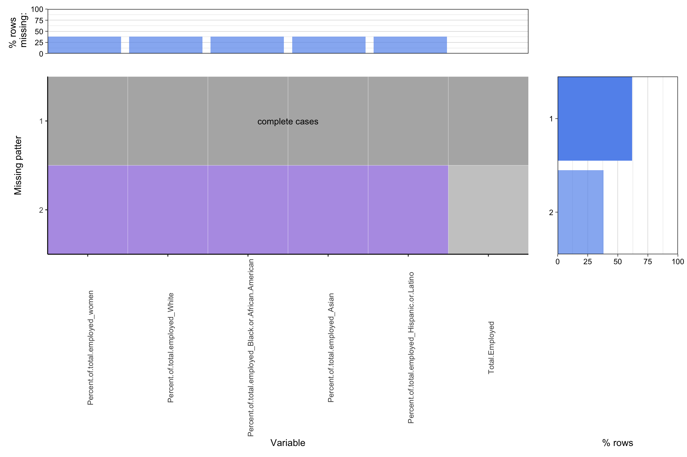
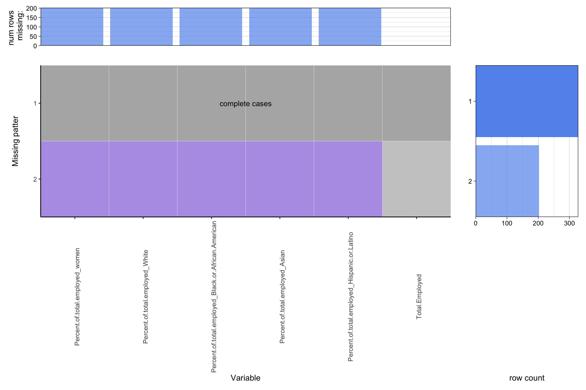
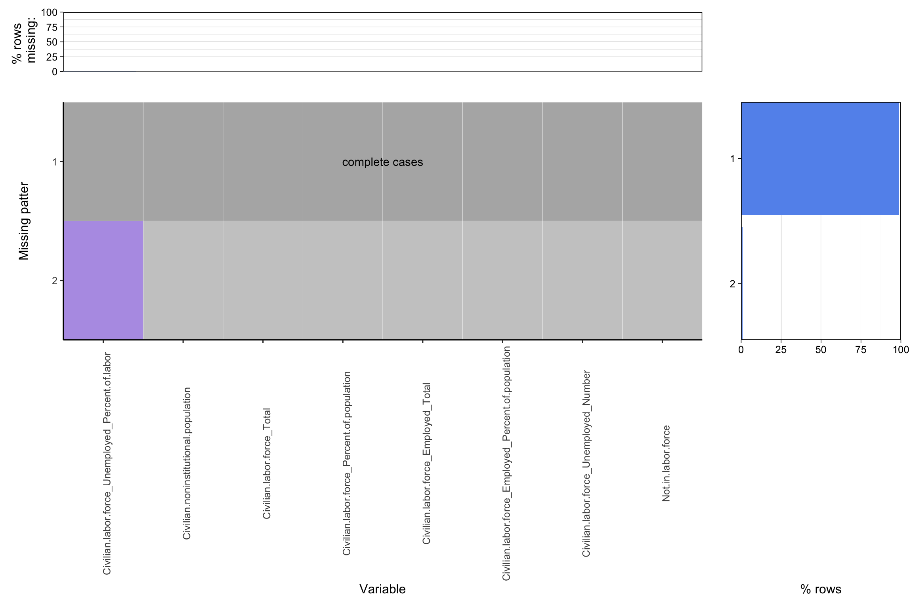
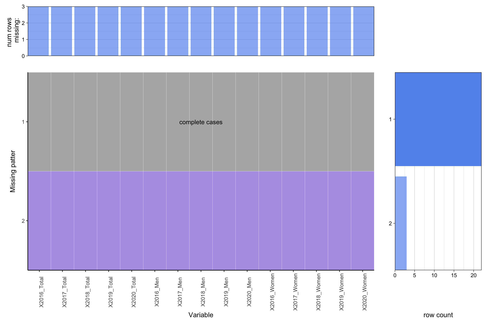
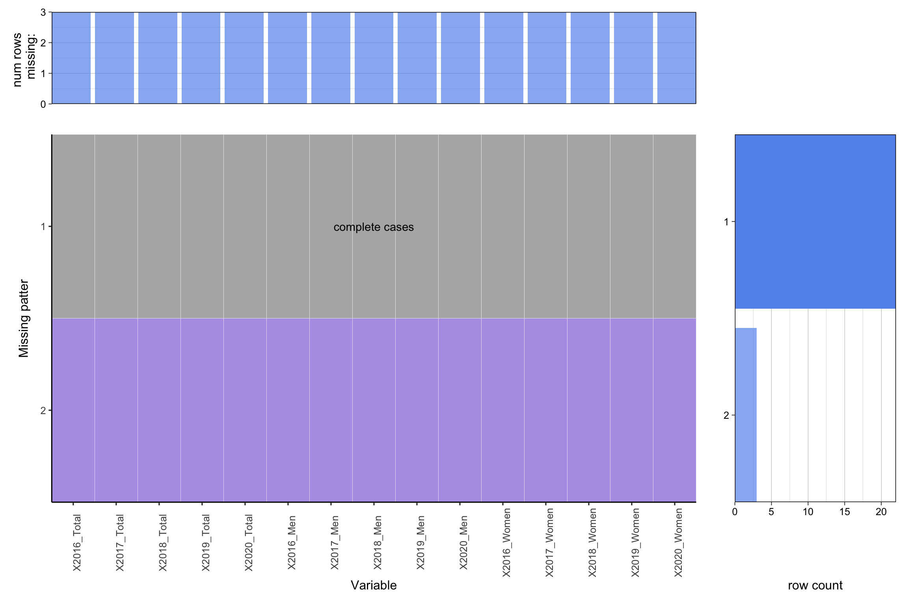

Chapter 4 Missing values
The files of files containing the missing values has been saved to an additional missing_data file to analyze missing patterns in this part. The code is included in the same file as in the data transformation file since we use python to do the data transformation and data cleaning part, having another file again import and export the files would be a waste of time.
The Missing Values Pattern: (Since the headers for our data is longer then usual, we remove the x labels for the above bar chart for artistic)
4.1 “Employed persons by detailed occupation, sex, race, and Hispanic or Latino ethnicity”:(from 2016 to 2020)
 When using the files from 2016 to 2020, they all generate the same graphs so we only show the graphs for 2017 to do missing pattern analysis(since compare to the others, the files for 2016 does not contain the columns for White people):
The Total Employed column does not contain any missing data while the other four (Percentage of women total employed; Percentage of white total employed; Percentage of Black or African American employed; Percentage of Asian total employed; Percentage of Hispanic or Latino total employed ) all have same amount of missing values: They all have 200 rows missing and around 37.5% of the rows are missing. With carefully looking at the data, there is no values could be put inside the empty cells. And because all the files have the same missing patterns and position, this should be designed to miss from the data set origin, and we choose to drop all of the rows having missing values.
4.2 “Employment status of the civilian noninstitutional population by age, sex, and race”(from 2016 to 2020)

Again, when using the data files from 2016 to 2020, they all generate the missing pattern graphs, we only use the the files in 2016 to do missing pattern analysis:
There is only one column named “Civilian labor force_Unemployed_Percent of labor” has missing values and only have 3 rows contain missing value, and due to the number of records, the percentage is around 0%. When actually take a look at the missing values, they could be calculated by using the unemployment number divided by the total number of people to get the value. Thus for these kind files, we do not drop the rows but fill them by calculating them.
4.3 “Unemployed persons by occupation and sex”
 

Looking at the graphs generated, there are 15 columns containing the missing values, and all have the same missing pattern. They all have 3 rows missing in each column, and the percentage is around 10%. Since all of them have the same missing pattern, it should be designed not to have values in the original data files. Therefore, for these rows, drop them would be the best choice.